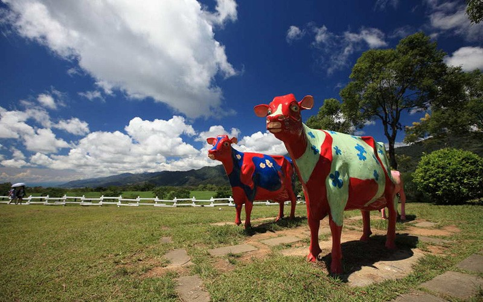
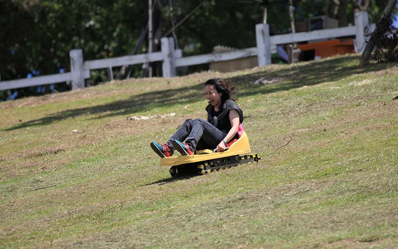
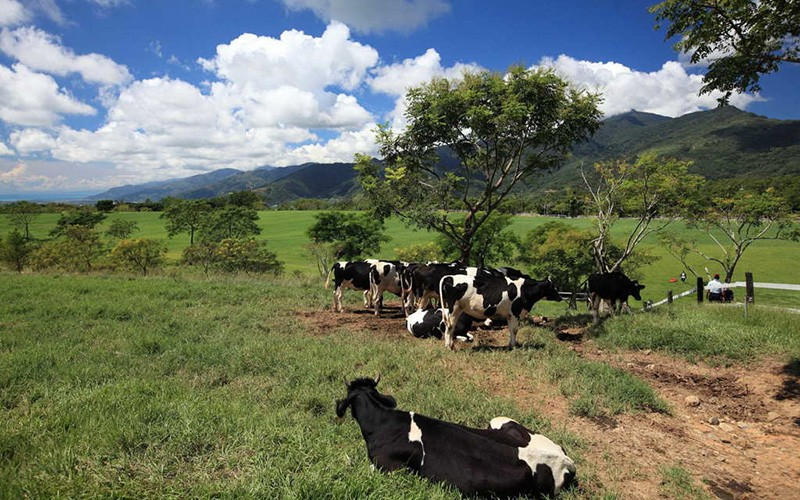
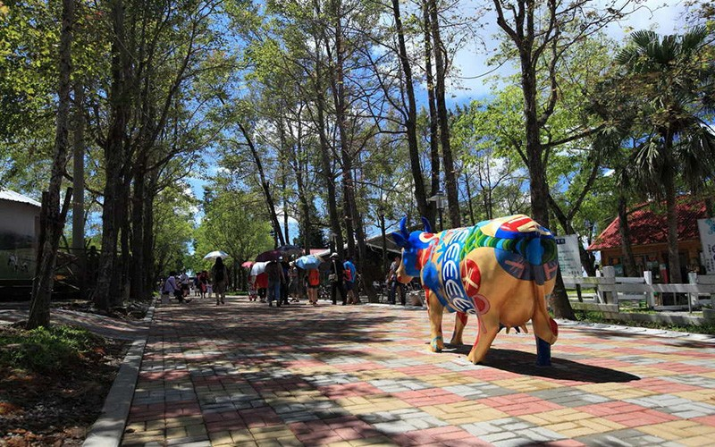
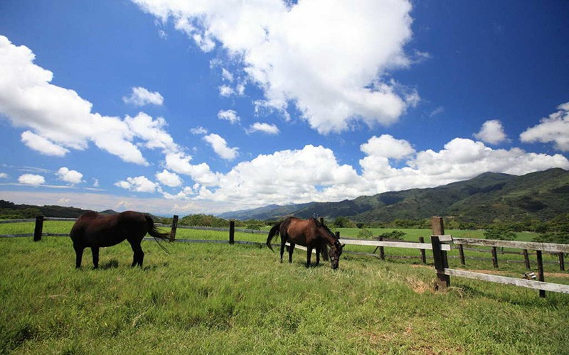
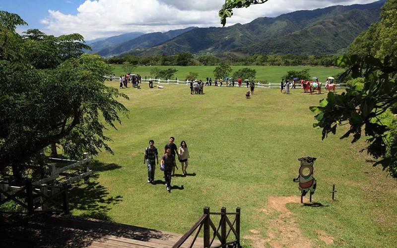
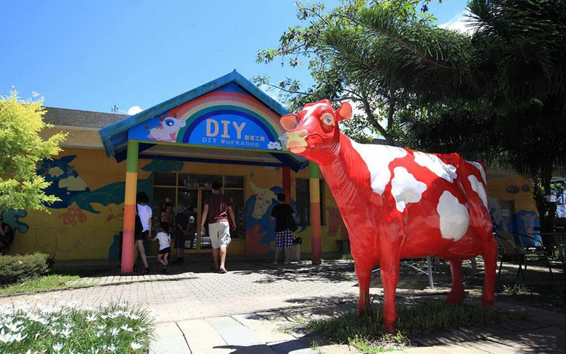
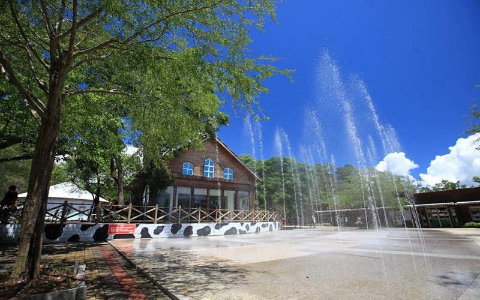
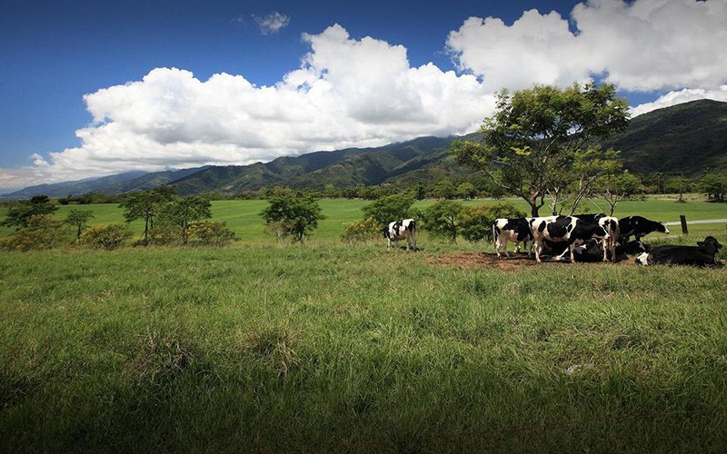
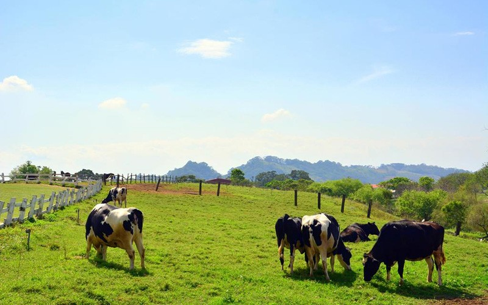
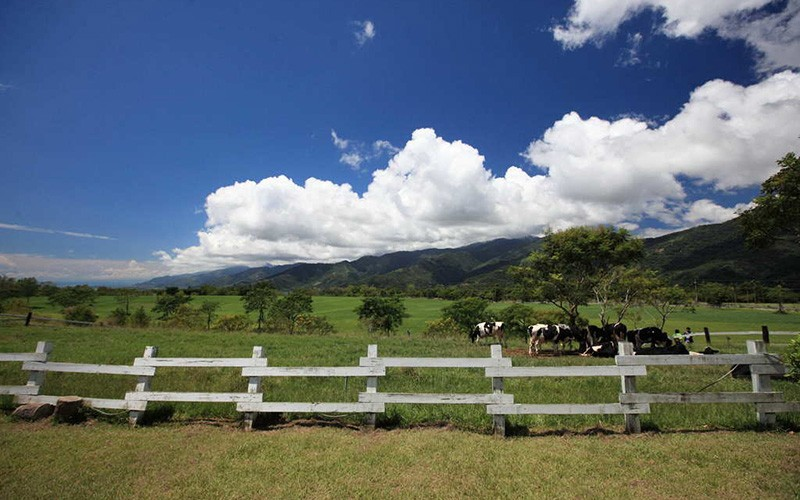
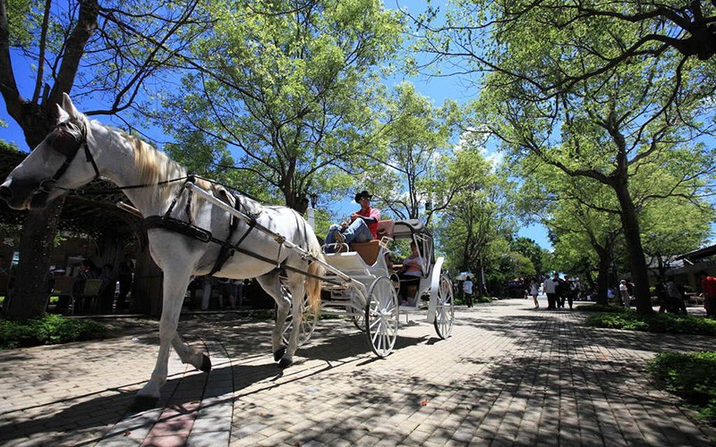
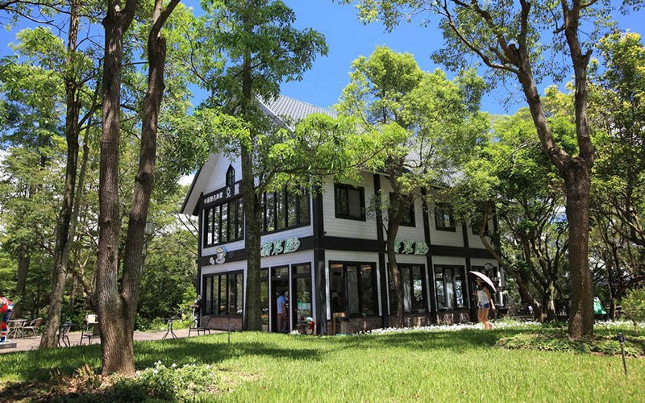
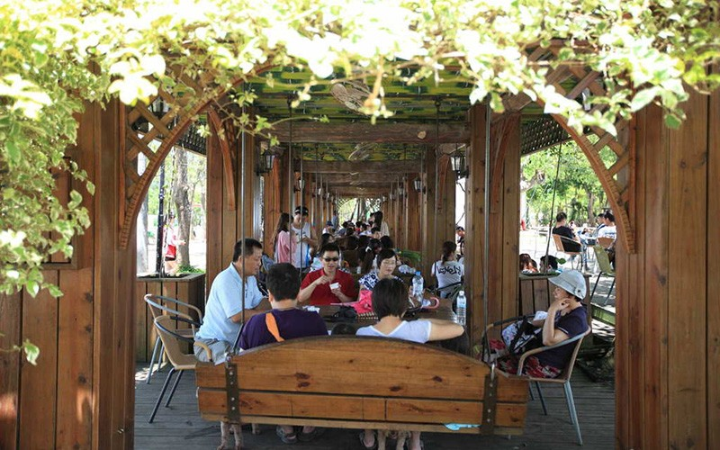
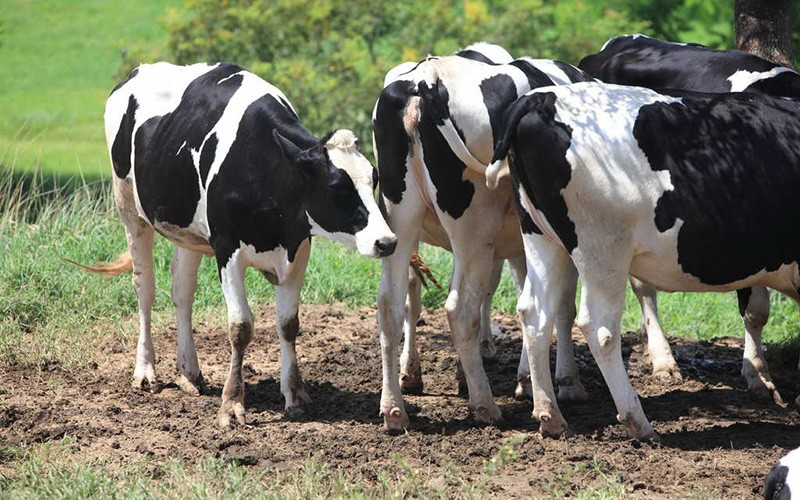
初鹿牧場
初鹿牧場視野遼闊，觸目可及的青青牧草，令人身心舒暢。初鹿牧場是全臺灣最大的坡地牧場，面積大約67公頃，成群乳牛悠閒的在如茵草原上漫步，雪白的圍欄、朱紅的房，在蔚藍天空和柔軟白雲襯托下，彷彿如詩如畫的歐洲莊園，讓人陶醉不己。
介紹
初鹿牧場於民國62年成立，是臺東地區歷史最久的大型觀光牧場，原為國有財產局委託土地銀行代管經營，後於民國94年轉為民營。初鹿牧場位於海拔200至390公尺之間的高台地上，由於山坡平緩，排水良好，牧場裡種植了大面積熱帶盤固拉牧草作為畜牧用食草。
初鹿牧場園區面積約72公頃，飼養250頭乳牛，牧場內規畫有放牧區、滾草區、餵食區、森林浴等不同區域，另有餐廳及產品販賣區，可在餐廳吃到初鹿鮮奶所做的小饅頭，產品販賣區則有不同口味的初鹿鮮乳與其他相關製品可供購買。
【資料來源：臺東觀光旅遊網】
初鹿牧場初鹿牧場視野遼闊，觸目可及的青青牧草，令人身心舒暢。初鹿牧場是全臺灣最大的坡地牧場，面積大約67公頃，成群乳牛悠閒的在如茵草原上漫步，雪白的圍欄、朱紅的房，在蔚藍天空和柔軟白雲襯托下，彷彿如詩如畫的歐洲莊園，讓人陶醉不己。介紹初鹿牧場於民國62年成立，是臺東地區歷史最久的大型觀光牧場，原為國有財產局委託土地銀行代管經營，後於民國94年轉為民營。初鹿牧場位於海拔200至390公尺之間的高台地上，由於山坡平緩，排水良好，牧場裡種植了大面積熱帶盤固拉牧草作為畜牧用食草。 初鹿牧場園區面積約72公頃，飼養250頭乳牛，牧場內規畫有放牧區、滾草區、餵食區、森林浴等不同區域，另有餐廳及產品販賣區，可在餐廳吃到初鹿鮮奶所做的小饅頭，產品販賣區則有不同口味的初鹿鮮乳與其他相關製品可供購買。
Chulu Ranch The horizon is broad at Chulu Ranch, and the green grass all around helps visitors feel physically and mentally relaxed. Chulu Ranch is the biggest hillside ranch in Taiwan, with an area of about 67 hectares. Groups of dairy cows walk on the comfortable grassland, and the white fences and red houses accompanied by the blue sky and soft white clouds create the feeling of a picturesque European manor. Introduction Established in 1973, Chulu Ranch is a large-scale tourist attraction ranch. It’s the oldest of its kind in Taitung. The ranch’s operation was originally committed to the Land Bank of Taiwan by the National Property Administration, and it was privatized in 2005. Chulu Ranch is located on a high tableland with altitudes ranging from 200 to 390 meters. Due to its gentle hillside and good drainage, a large area of the ranch is used to grow tropical pangola grass as feed for livestock. Chulu Ranch is about 72 hectares, and it holds 250 dairy cows. The ranch has areas for grazing, hay baling, feeding, and forest bathing. Also there are restaurants and shopping areas. You can taste the small steamed buns made with fresh Chulu milk in the restaurants, and there are different flavors of milk and other related products in the shopping area.
初鹿牧場 視界が大きく開ける初鹿牧場では、青々とした牧草が広がり、身心ともに清々しい気持ちでいっぱいになるでしょう。初鹿牧場は台湾最大の傾斜型牧場で、面積は約67ヘクタール。緑の敷物の様な草原の上を乳牛の群れがゆっくりと闊歩しています。周囲の柵は雪の様に純白で、小屋は深紅。青々と広がる空と柔らかな白雲のもとに広がる当牧場は、美しい詩や絵画の中に描かれるヨーロッパの別荘地のように、人々を陶酔させています。 紹介 初鹿牧場は1973年に開設され、台東地区で最も歴史がある大型観光牧場です。かつては国有財産局が土地銀行に業務を委託していましたが、その後2005年に民営化されました。初鹿牧場は、海抜200～390メートルの高台に位置しますが、斜面は緩やかなため、水はけがよく、牧場には牧畜用の牧草として熱帯性のバンゴラグラスが大規模に植えられています。 初鹿牧場園区の面積は約72ヘクタールで、250頭の乳牛が飼育されています。牧場内は、放牧区、牧草ロール区、餌やり区、森林浴等の様々なエリアが配置され、レストランや売店も併設。レストランで初鹿牛乳で作られた小饅頭を楽しめるほか、売店でも様々な味の初鹿牛乳やその他関連商品を購入できます。